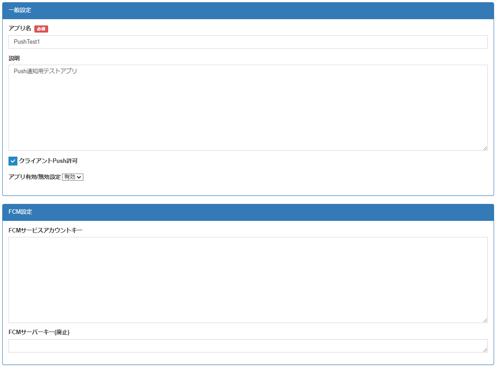

4.2. NEC BaaS サーバへのサービスアカウントキーの設定¶
4.2.1. アプリケーションの作成¶
FCM のサーバーキーが取得できたら、MBaaS サーバにキーを登録します。
まずMBaaS デベロッパコンソールにログインし、アプリケーションを作成しておいてください。
4.2.2. サービスアカウントキーの登録¶
デベロッパコンソールのアプリケーションの編集画面に移動してください。
「FCM設定」の「FCMサービスアカウントキー」欄にFCM のサービスアカウントキーを入力してください。 (サーバーキーを使用する場合は 「FCMサーバーキー(廃止)」に入力してください)
また、クライアントからの Push 送信を許可する場合、「クライアントPush送信許可」 にチェックを入れる必要があります。
注意
「サービスアカウントキー」と「サーバーキー」の両方が設定された場合は、「サービスアカウントキー」が優先されます。
また、Push送信時にキーの値が誤っている場合は500エラーになり、Push送信に失敗します。（エラーの詳細は、サーバーログをご確認ください。）